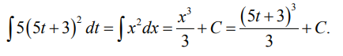

МАТЕМАТИЧЕСКИЙ АНАЛИЗ.
Продолжим рассматривать примеры вычисления производных.
Примеры. Найти производные от следующих функций:
Геометрический смысл производной
Прямая M0 P, P, изображенная на рис. 34, является касательной к кривой y = f(x). Она имеет с кривой только одну общую точку M0(x0,ƒ(x0)).Производная функции y = f(x) в точке x0 равна тангенсу угла наклона касательной к кривой y = f(x), проведенной через точку M0(x0,ƒ(x0)).
Пусть ∠M0 Px = α.Тогда tgα = ƒ'(x0).
Уравнение касательной
Для касательной M0 P известен тангенс угла наклона k = ƒ'(x0) и точка M0(x0,ƒ(x0)) через которую проходит прямая. Нетрудно записать уравнение касательной:Пример. Записать уравнение касательной к кривой y = x2 в точке (−1, 1).
Понятие сложной функции
Пусть на множестве X задана функция y = g(x), Y — область значений этой функции. На множестве Y задана функция z = ƒ(y) c областью значений Z (рис. 35).
z = ƒ(g(x)) — сложная функция.
Примеры
Производная сложной функции
Пусть функция y = g(x) имеет производную g'x(x) во всех точках множества X и функция z = ƒ(y) имеет производную ƒ'y(y) во всех точках множества Y. Тогда производная сложной функции вычисляется по формулеПримеры. Найти производные сложных функций:

Дифференциал
Если функция y = y(x) имеет производную y'(x0), то приращение функции Δy имеет следующую структуру:
где α(Δx) — бесконечно малая, поэтому второе слагаемое при Δx→0 становится очень маленьким и им можно пренебречь. При Δx → 0 Δy ≈ y'(x0)Δx. Вместо Δx писать договорились dx и обозначили dy = y'(x0)dx. Тогда Δy ≈ dy.
Определение. Пусть функция y = y(x) имеет производную y'(x0), тогда dy = y'(x0)dx называется дифференциалом функции в точке x0. >Пример. Записать дифференциал функции y = x2 - 4x.
Определение. Функция, имеющая конечную производную в точке x0, называется дифференцируемой в точке x0.
Неопределенный интеграл
Первообразная
По заданной функции y(x) мы умеем искать ее производную y'(x).Определение. Пусть на интервале (a, b) задана функция ƒ(x) и она является производной некоторой функции g(x), т. е. g′(x) = ƒ(x). Функция g(x) называется первообразной.
Как ее найти?
Определение неопределенного интеграла
Если мы знаем первообразную g(x) для функции ƒ(x), то g(x) + C, где C — любая константа, тоже является первообразной для функции ƒ(x), т. е. первообразных много, целый класс {g(x) + C}. Можно показать, что любая первообразная принадлежит этому классу, т. е. все первообразные отличаются друг от друга на константу. Этот класс обозначают значком ∫ ƒ(x)dx и называют неопределенный интеграл: ∫ ƒ(x)dx = {g(x) + C}; ƒ(x) называется подынтегральная функция, ƒ(x)dx — подынтегральное выражение.Не для всякой функции f(x) существует неопределенный интеграл.
Определение Функция f(x) называется интегрируемой на интервале (a, b), если неопределенный интеграл ƒ(x)dx существует.
Таблица интегралов
Примеры.
Найти интегралы.Свойства интегралов
1. Константу можно выносить за знак интеграла:2. Интеграл от суммы двух функций равен сумме интегралов от этих функций:
Примеры.
Найти интегралы.Замена переменной в неопределенном интеграле
Пусть на отрезке [α, β] задана дифференцируемая функция x = φ(t) и x ∈ [a, b], а на [a, b] определена функция y = ƒ(x). Пусть ƒ(x) интегрируема и g(x) ее первообразная, т. е. ∫ ƒ(x)dx = g(x) + C.Рассмотрим интеграл ∫ ƒ(φ(t)) φ'(t)dt. Оказывается, он равен g(φ(t)), т. е. имеет место формула замены переменной:
Черта означает, что после вычисления интеграла вместо x нужно подставить φ(t).
Замена заключается в том, что φ(t) заменяется на x, а φ'(t)dt заменяется на dx. Пример. Найти ∫ 5(5t + 3)2 dt.
Заменим 5t + 3 на x: x = 5t + 3, тогда dx = 5dt Получим

Пример
Пример